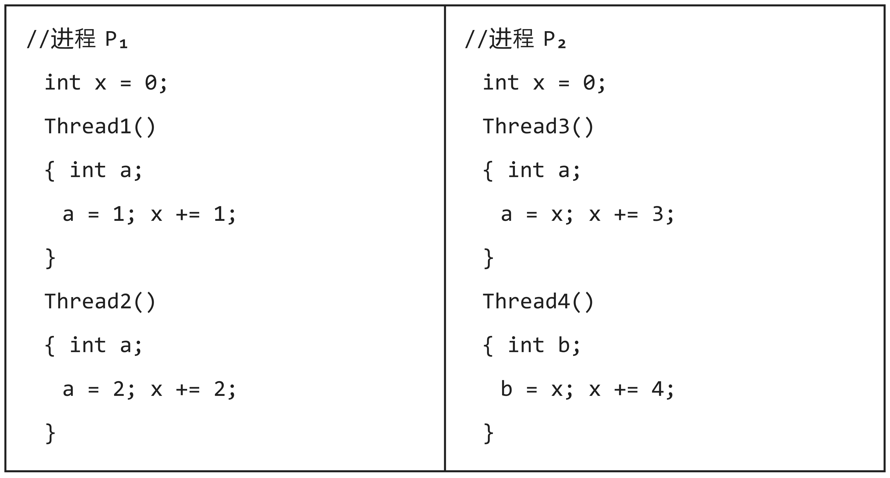

操作系统
2016-30
进程与线程简介同步与互斥进程P₁和P₂均包含并发执行的线程，部分伪代码描述如下所示。

下列选项中，需要互斥执行的操作是__。
答案
30
答案：C
本题讲解：谁和谁真的在"抢"同一份数据
第一步：理清变量的归属
- a、b：在各自线程函数里用
int a;/int b;声明，是线程私有的局部变量； - x：虽然两个进程都写了
int x = 0;，但 P1 与 P2 是两个进程，地址空间相互独立，P1 的 x 和 P2 的 x 是两份不同的变量。真正共享的 x 只存在于同一进程的两个线程之间。
第二步：需要互斥的判据
两个并发执行流对同一个变量的操作中含写且可能交叠（写-写 / 读-写）才需要互斥；读-读不需要。
第三步：逐项判断
- A（a=1 与 a=2）：两个线程各自的局部 a，各写各的，不需要互斥。
- B（a=x 与 b=x）：同一进程 P2 内两个线程都在读 x，读-读不冲突，不需要互斥。
- C（x += 1 与 x += 2）：P1 内 Thread1 与 Thread2 对同一个 x 并发执行"读-改-写"，可能丢更新（如得到 3 而不是 6），必须互斥。
- D（x += 1 与 x += 3）：分属 P1、P2 两个进程，动的是两份不同的 x，不需要互斥。
易错点
- 忘了进程隔离：把 P2 的 x 与 P1 的 x 当成同一个变量（D 项的陷阱）。
- 忘了 a/b 是局部变量（A、B 项的陷阱）。
- 以为"读共享数据"也要互斥（B 项）：只有写-写或读-写才冲突。
答案：C。